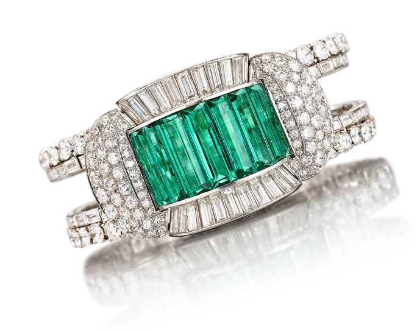
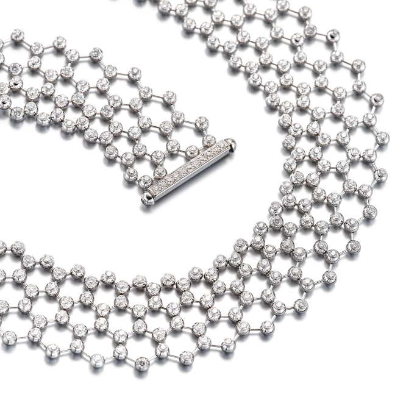
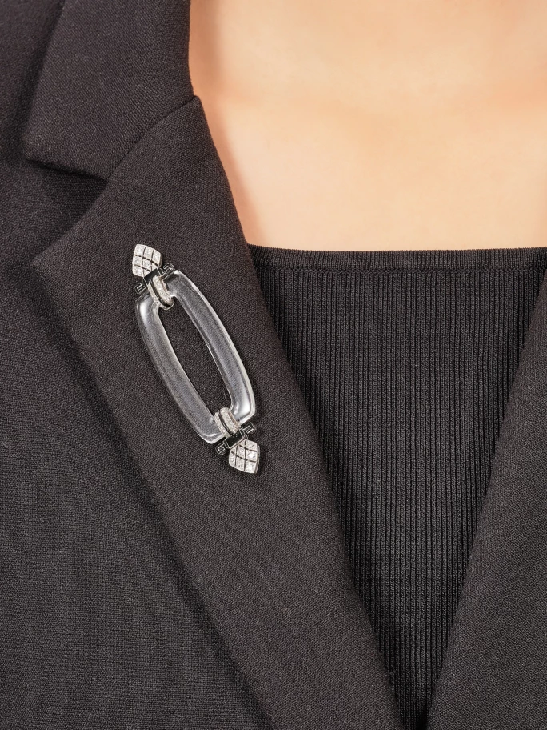
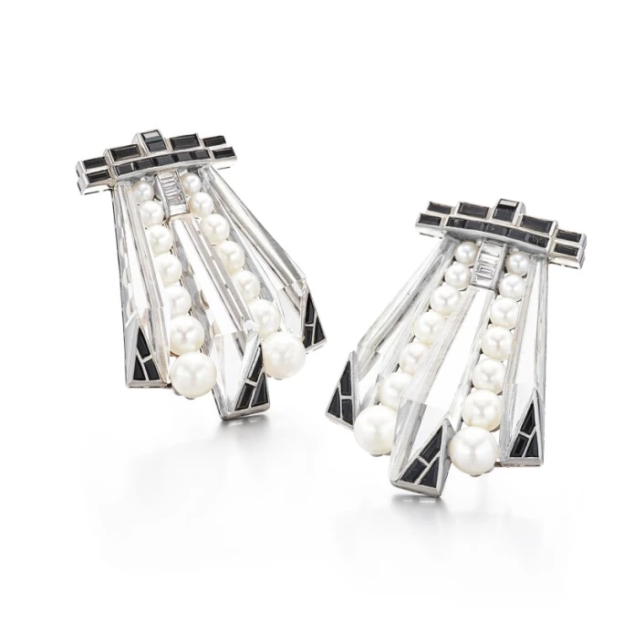
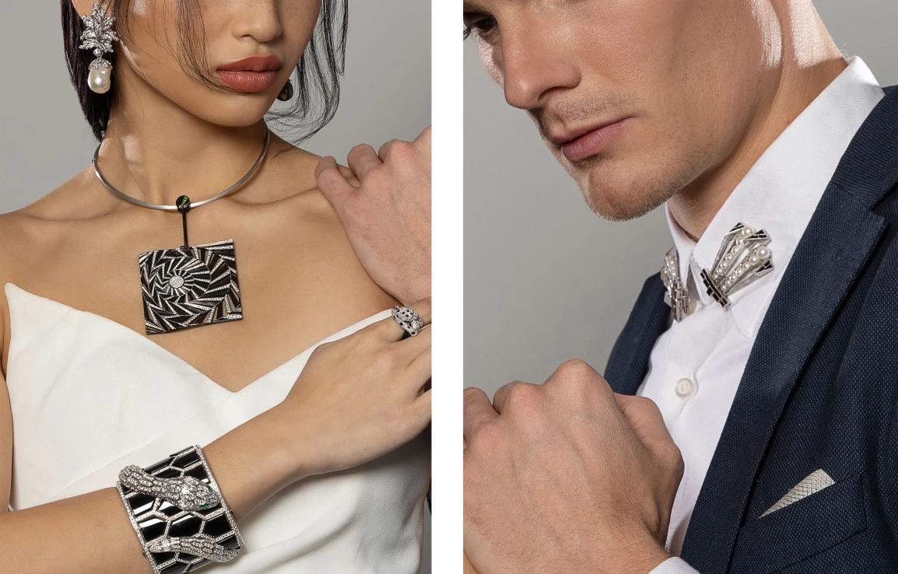

Sotheby's Hong Kong · 2023年1月12日
適逢珍貴珠寶拍賣會將至，今天就讓我們走進珠寶幾何設計的迷人天地，一窺各式珠寶的絕色美態。珠寶幾何設計以三角形、橢圓形和正方形為基本元素，搭配大膽俐落的線條和棱角分明的切割，這種風格在 1920 至 30 年的裝飾藝術（Art Deco）時期大行其道，在1960 和 70 年代一度復興，如今再度強勢回歸。
裝飾藝術（Art Deco）被譽為史上其中一場最具創意的藝術運動，在 1925 年巴黎國際裝飾藝術與現代工業博覽會上首次出現，標誌著現代、進步和創新時期的開始。它為建築、視覺藝術和時尚服飾領域帶來巨大衝擊，對珠寶設計的影響更是不言而喻，至今在不少世界級珠寶品牌和設計師的作品中仍可見裝飾藝術的流風。
精簡俐落的幾何設計是裝飾藝術珠寶的一大標誌。裝飾藝術深受立體主義影響，著重探索角度與平面之間的關係，展現簡潔的線條和形狀，圖案亦傾向重複出現。
這種新穎獨特的美學得以實現，有賴當時工業技術進步，新式機械令珠寶工匠得以將更多創意化為現實，例如梵克雅寶（Van Cleef & Arpels）就在這段時期研發出著名的隱密式鑲嵌工藝，將金屬框架完全隱藏，令寶石展現出絢爛奇巧的幾何形狀，圖案活靈活現。
從裝飾藝術到當代幾何美學
裝飾藝術經典雋永、現代感十足，深深影響 21 世紀的設計師。與別不同的新式鑽石切割技術在裝飾藝術時期陸續誕生，包括長方形、方形、梯形、半月形和三角形切割。裝飾藝術風格珠寶往往結合多於一種切割方式，呈現如馬賽克般的圖案和幾何效果。
長方形切割源自裝飾藝術運動的鼎盛時期，這種切割方式令當時的設計師更自由地把玩作品的尺寸和比例。例如這條祖母綠配鑽石手鐲，它的裝飾圖案別出心栽、釦環別緻美麗，整體採用長方形和圓形切割鑽石，效果璀璨奪目。這種受裝飾藝術風格啟發的大鑽石手鏈款式在 20 世紀初非常流行。

祖母綠 配 鑽石 手鐲 | 估價 120,000 - 180,000 港元

卡地亞 | 'Perles Diamant' 鑽石 項鏈 | 估價 180,000 - 280,000 港元
至於這條卡地亞鑽石項鏈，它運用明亮式切割鑽石砌出無縫的幾何圖案，堪稱典範。類似的作品亦曾在 2022 年巴黎裝飾藝術博物館和達拉斯藝術博物館舉辦的「卡地亞與伊斯蘭藝術：現代風格之源」展覽中展出，這場展覽展示了伊斯蘭藝術千變萬化的圖案設計如何影響卡地亞的珠寶設計。
創新的色彩和形狀搭配
裝飾藝術珠寶強調對稱，要營造這種效果，不但需運用新技術，顏色和物料的選擇同樣非常重要。除了鑽石以外，珠寶工匠還會加入有別傳統的物料，例如線條切割流暢的水晶。這枚卡地亞裝飾藝術風格水晶配琺瑯及鑽石胸針（約 1910 年製）便是當中典範，它也可以作帽針佩戴。棕櫚葉圖案在20世紀初非常流行，胸針尾端蜿蜒的細節亦突顯出卡地亞當時積極探索的美學新方向。其他流行的材料包括取代了琺瑯的漆、20 年代大量生產的養殖珍珠。許多珠寶工匠為了更突出圖案的形狀和整體對稱度，均嘗試用單色調營造乾淨俐落的線條感，就如這枚裝飾藝術風格珍珠配水晶、縞瑪瑙及鑽石雙扣胸針（約 1910 年製）——珍珠和縞瑪瑙的顏色、紋理和材質均形成鮮明對比。

卡地亞 | 裝飾藝術 白水晶 配 琺瑯彩 及 鑽石 胸針 | 估價 95,000 - 110,000 港元
意大利珠寶世家寶格麗（Bulgari）在搭配顏色和材料方面總是令人驚喜，例如Serpenti系列，正是品牌久盛不衰的得意之作。蛇象徵誘惑，可追溯至古希臘和羅馬神話。Serpenti系列在 1940 年代首次亮相，但近年同系列的作品卻反映了更早期的裝飾藝術美學影響。近年寶格麗推出一款Serpenti手鏈，蛇身的鱗片由黑色琺瑯與白鑽組成，色彩對比強烈，視覺效果出眾。另一款手鐲則飾有幾何形狀的黑色縞瑪瑙，蛇眼鑲嵌蛋面祖母綠，栩栩如生；手鐲上的每顆縞瑪瑙都經精雕细刻，鱗片幾可亂真，可見匠人工藝非凡。
幾何圖案、形狀和顏色的對比，同樣可見於這條Jewellery Theatre 的皇牌作品——寶石配鑽石吊墜項鏈。吊墜以萬花筒為靈感，有兩種佩戴方式，一面鑲嵌寶石，另一面黑白相襯，帶出不同質感完美糅合的效果。

裝飾藝術 珍珠 配 縞瑪瑙, 白水晶 及 鑽石 胸針一對 | 估價 60,000 - 90,000 港元

未了的美學情結
裝飾藝術（Art Deco）風格別樹一幟，與其之前的新藝術（Art Nouveau）運動相比，更加大膽前衛。不論是單色設計、當代工藝技術（當時人們推崇機器製造，加上新式鑽石切割技術出現）、用新穎物料呈現抽象圖案設計，都是這個時期的珠寶設計的特點。正因為裝飾藝術風格珠寶的設計、材料和工藝皆一絲不苟，致令眾多藏家對之深生嚮往、愛不釋手。
裝飾藝術創新而大膽奔放，經典又不乏現代氣息，定必繼續啟發更多珠寶工匠，令一代又一代的藏家為之著迷，延續不朽的幾何美學。